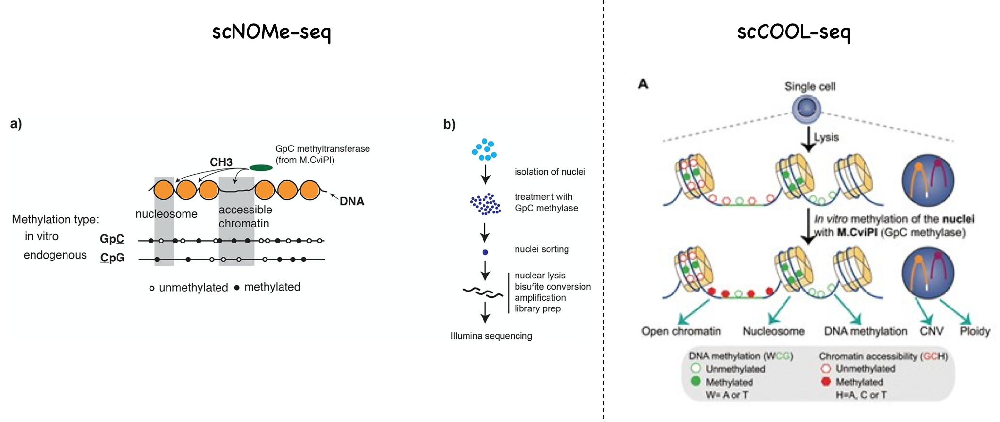

Both scNOMe-seq and scCOOL-seq use similar principles and strategies. In the mammalian genmoe, CpG methylation (mCG) is common, but GpC methylation (GmC) is absent. The methods apply a purified GpC methylase (M.CviPI) on nuclei. The majority of the DNA is protected by nucleosomes and inaccessible to M.CviPI. Only GpC within accessible regions can be methylated by M.CviPI. After bisulfite conversion and sequencing, one can identify DNA methylation by CpG methylation, and chromatin accessbility by GpC methylation. These two methods differ at the library preparation steps after bisulfite conversion. scNOMe-seq uses a comercial kit (Pico Methyl-seq Library prep Kit) to make libraries, while scCOOL-seq simply uses scBS-seq method to make libraries. Click here to see a step-by-step protocol of scBS-seq. The final library structures of scNOMe-seq and scCOOL-seq are the same. scCOOL-seq uses some extra analysis to investigate CNV and ploidy.
